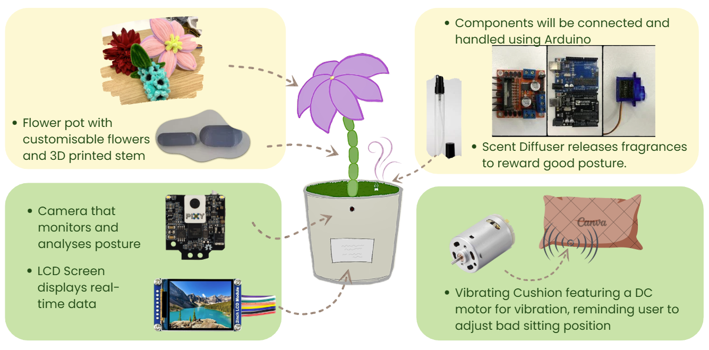
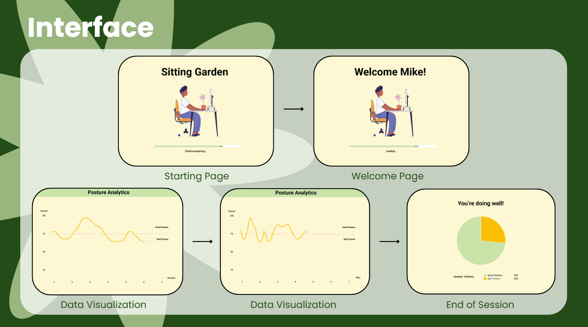
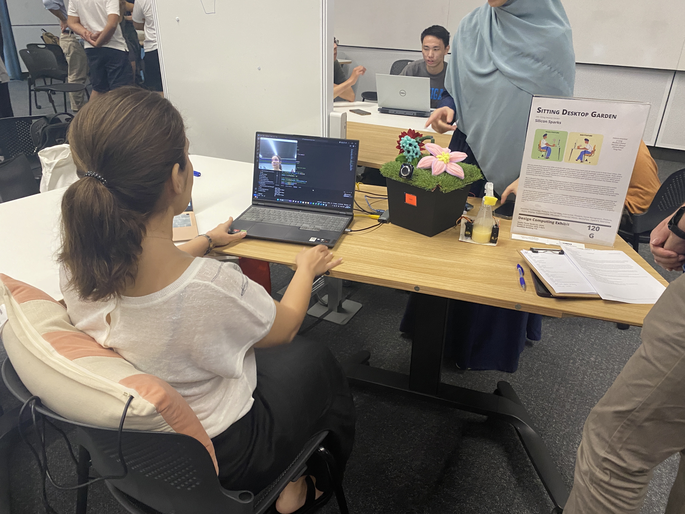

Sitting Desktop Garden
THE BRIEF
"Sitting Desk Garden" is an interactive desktop device designed to promote healthy sitting habits during long periods of desk work.
THE INSIGHT
Prolonged sitting and poor posture are common issues for students and office workers. Existing posture-correction products often rely on intrusive alerts or uncomfortable wearables, making them easy to ignore over time.

UX/UI Design
Transforming posture data into ambient feedback. Instead of disruptive alerts, the project converts real-time posture data into subtle visual cues, integrating health-tracking seamlessly into the workflow without breaking the user's focus.

Exhibition
A fully integrated hardware-software system validated through user testing. Demonstrated technical feasibility and UX impact in a realistic office scenario.
